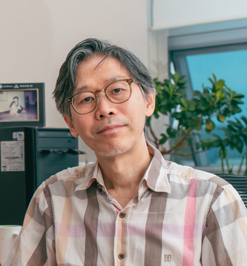

Login
|
Korean
Maps and Directions
Member
Curriculum
Department Introduce
Industrial Information
System Engineering
Department Introduce
Industrial & Information Systems Engineering(IISE) is a discipline that studies methodologies for the design, installation, and operation of the system. The system can be classified as industrial system and information system. The goal of IISE is to develop and educate the methodologies that fit to the respective characteristics of each system. That is, our department is concerned with theories and technologies needed in designing, operating, and improving the system that is consisted of human, materials, machineries, information, and energy. We also focuses on the computer application and the software development and application needed to solve the complex problems related to the system. Our mission is to cultivate the experts who can perform the roles of planning / designing / managing / evaluating/operating the system effectively and efficiently using information technologies to achieve the common objectives of the system or organization.
Curriculum
Member

Hong, Jung-Sik
Major :
Explainable Data Mining
Tel : +82-2-970-6474
E-mail : hong@seoultech.ac.kr
Ahn, Jae-Kyoung
Major : Engineering Economy
Tel : +82-2-970-6479
E-mail : jkahn@seoultech.ac.kr
Jeong, Jin-Woo
Major : Interactive computing
Tel : +82-2-970-6468
E-mail :
jinw.jeong@seoultech.ac.kr
Hwang, Sang-heum
Major : Machine Learning
Tel : +82-2-970-6462
E-mail : shwang@seoultech.ac.kr
Maps and Directions
Subway
⑦Line Take Exit 1 at Gongreung Station on Line 7 and walk 600m (10 min) ①Line Take Exit 1, 4, 6 at Seokgye Station on Line 1 ⑥LineTake Exit 1, 4, 6 at Seokgye Station on Line 6 Public Transportation
Public Transportation
Green Bus : 1134, 1135, 1141, 1147, 1221, 1224 and 1227Village Bus : 03, 04
Incheon International Airport ~ Seoul National University of Science & Technology
By car :Incheon International Airport - Yeonan-dong, Jung-gu - Shin-bul IC - Inner Circulation Road- Bukbu Expressway - Dongbu Expressway - Hwarangro - Taereung Station - Seoul National University of Science &Technology
By bus :Take the Nowon Seongbuk-bound airport bus. Get off at Taereung Station. Take subway Line 7 to Gongreung Station. Take the school shuttle bus from Exit 1 at Gongreung Station..